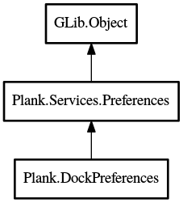

DockPreferences
Object Hierarchy:

Description:
public class DockPreferences :
Preferences
Contains all preferences for docks.
Content:
Constants:
Properties:
Creation methods:
Methods:
- protected override void reset_properties ()
Resets all properties to their default values. Called from construct
and before loading from the backing file.
- public
int get_monitor ()
Get the actual monitor to place the dock on
- public void increase_icon_size ()
Increases the IconSize, if it is not already at its max.
- public void decrease_icon_size ()
Decreases the IconSize, if it is not already at its min.
- public
bool is_horizontal_dock ()
Return whether or not a dock is a horizontal dock.
- protected override void verify (
string prop)
This method will verify the value of a property. If the value is
wrong, this method should replace it with a sanitized value.
Inherited Members:
All known members inherited from class Plank.Services.Preferences
All known members inherited from class GLib.Object
- @new
- newv
- new_valist
- get_type
- get_class
- @ref
- unref
- ref_sink
- weak_ref
- weak_unref
- add_weak_pointer
- remove_weak_pointer
- @get
- @set
- get_property
- set_property
- get_data
- set_data
- set_data_full
- steal_data
- get_qdata
- set_qdata
- set_qdata_full
- steal_qdata
- freeze_notify
- thaw_notify
- dispose
- constructed
- notify_property
- connect
- disconnect
- add_toggle_ref
- remove_toggle_ref
- bind_property
- notify
- ref_count